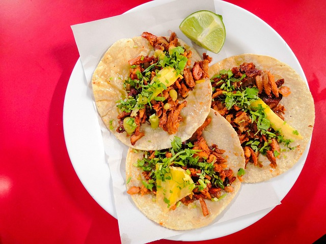

Tacos al Pastor

Description
These tacos are not only famous for their amazing taste but also for how
easy they are to prepare.
All you need is a slow cooker and in no time you will have savory tacos
to enjoy with your family.
Ingredients
- Pork shoulder (3 lb)
- Pineapple (4 spears)
- Guajillo chiles (6)
- Chile de arbol (1)
- Garlic (5 cloves)
- White onion (1/4)
- Whole black peppercorns (10)
- Oregano (1 teaspoon)
- Cumin (1/2 teaspoon)
- Ground cloves(1/4 teaspoon)
- Ground ginger (1/4 teaspoon)
- Kosher salt (1 1/2 teaspoon)
- Apple cider vinegar (1/4 cup)
- Orange juice (1/4 cup)
Home